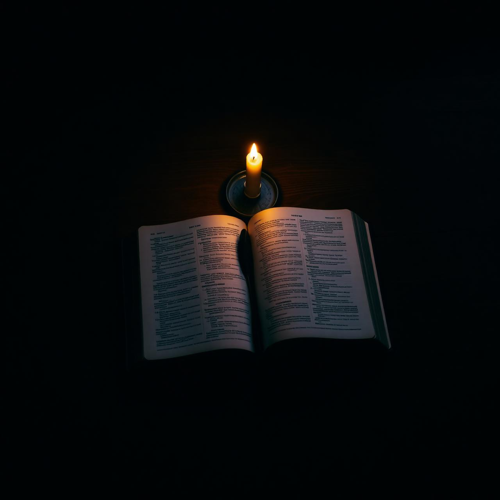

The Advisory Before Every Episode — and Why We Keep It Whole
Nineteen seconds, before every episode, saying plainly what you are about to see. We will not shorten it.
Every episode of The Right Way opens with the same advisory, spoken and on screen: these stories are raw and graphic, exactly as written; we add no beliefs of our own; we depict from the Hebrew Bible and the King James Version, cross-checked against the Dead Sea Scrolls; every episode lists its sources.

Nineteen seconds is a long time on the internet. We keep it whole anyway, for two reasons. First, honesty: some of these chapters are hard, and a viewer — especially a parent walking with a young person — deserves to know that before the story starts, not after. Second, trust: the advisory is our signature on the work. It tells you exactly what standard the episode was made under, every single time.
A channel that tells you its sources and its limits up front is a channel you can check. Check us. That is the point.
